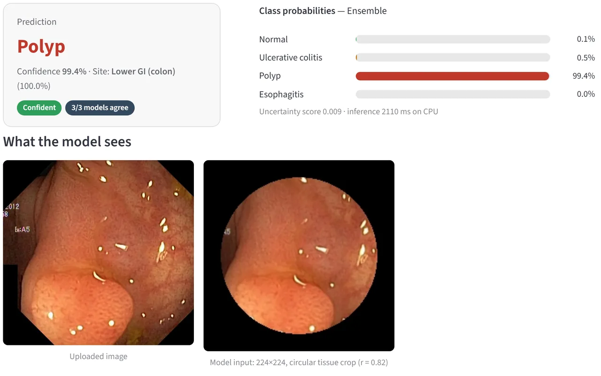
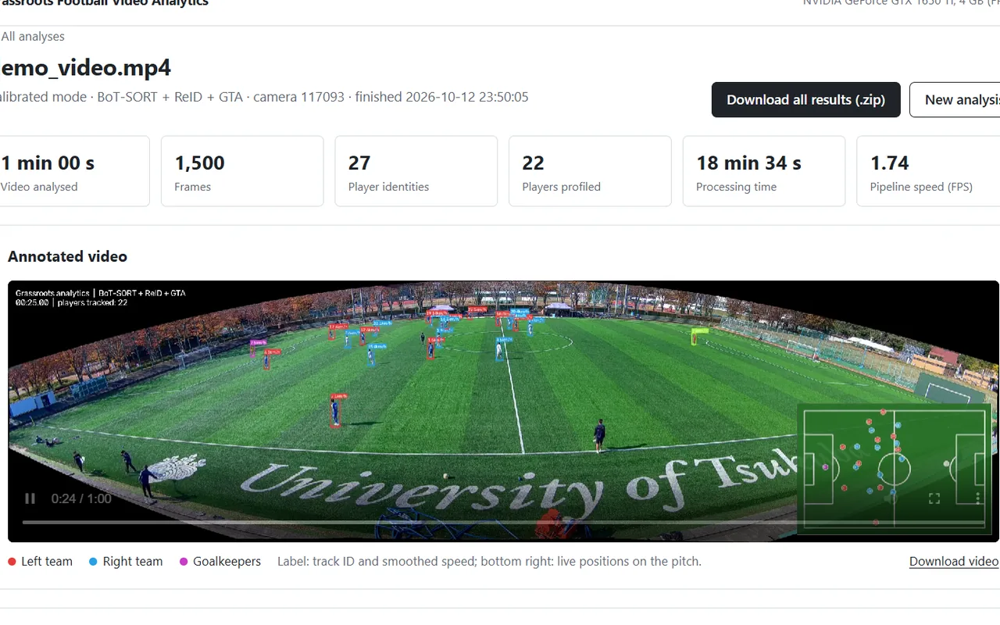

Parth Jadhav
Every project starts with a “why?” and ends with something I can deploy.
38All India Rank of 9,000+ teams, Amazon ML Challenge 2025
AI / ML EngineerM.Sc. AI & ML student at VIT Vellore, from Kolhapur
Where did it start?
-
Kolhapur: where curiosity started.
B.Sc. Computer Science, Vivekanand College. Graduated May 2023.
-
First real code in production.
Android Developer Intern, Dropout Technologies, Pune. Jun to Dec 2023.
-
Going deep into AI.
M.Sc. AI & ML, VIT Vellore. 2025 onward.
-
Smash: national stage.
Amazon ML Challenge 2025.
38All India Rank
of 9,000+ teams -
Rally continues.
Amazon ML Challenge 2026, as team Dead ReLUs Society.
91Team rank
of 10,000+ teams
What have I built?
-
AIR 38 of 9,000+
Multimodal Product Price Predictor
BERT + ViT dual encoder with a fusion head and SMAPE loss, built for the Amazon ML Challenge 2025.
-

IET SET paper
AI-Powered Learning Path Generator
Knowledge graph, DAG, RAG and XAI. 100% prerequisite satisfaction, and cached explanations fell from 5.06 s to 89.6 ms.
-

Page-cited answers
RAG ML Study Assistant
Reads PDFs with PyMuPDF and Tesseract OCR, searches them with FAISS, and answers with Qwen2.5-7B, citing the page.
-

97.99% accuracy
Artifact-Robust GI Endoscopy Classifier
FastViT-SA24 + GRL + DFR, with six release gates against shortcut learning. 97.79% on tissue alone, about chance on the border.
Research · paper under review · code on request
-

Low-cost video analytics
Grassroots Football Talent Analytics
YOLO detection, BoT-SORT tracking, pitch calibration and RTS-smoothed kinematics turn plain video into player profiles.
Research · paper under review · code on request
-

98.07% test accuracy
NeuroScan: Brain Tumor MRI Classifier
From-scratch ResNet-style CNN in a Flask app with accounts, history, an admin dashboard and Gemini summaries. Team project.
-

3 models compared
Plant Growth Stage Classifier
EfficientNet-B0 (92%), ViT (89.75%) and ResNet50V2 (94%) side by side in one Flask + Docker app.
-

Android, offline
English Coach
Kotlin app with an A1–C2 path, spaced repetition, Vosk speech scoring and a Gemini speaking coach. Based on MIT-licensed Kotoba.